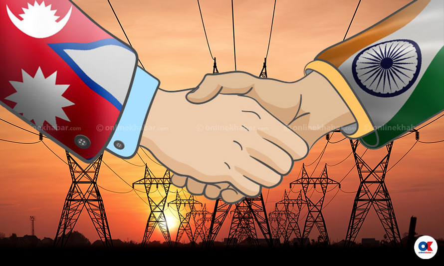
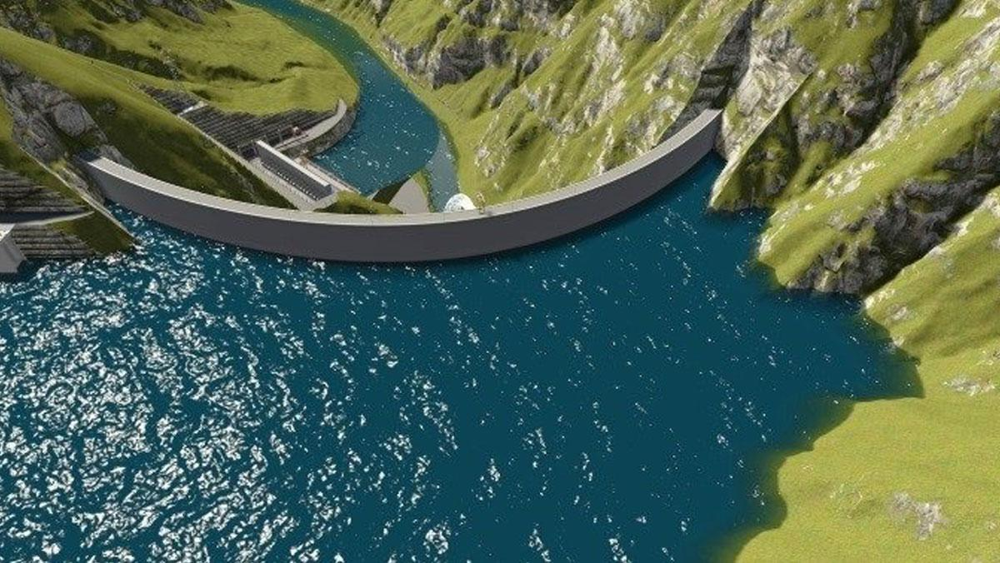
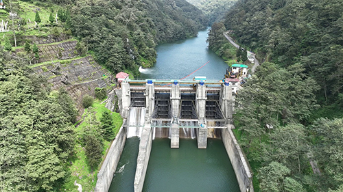
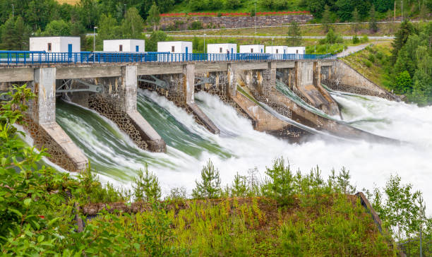
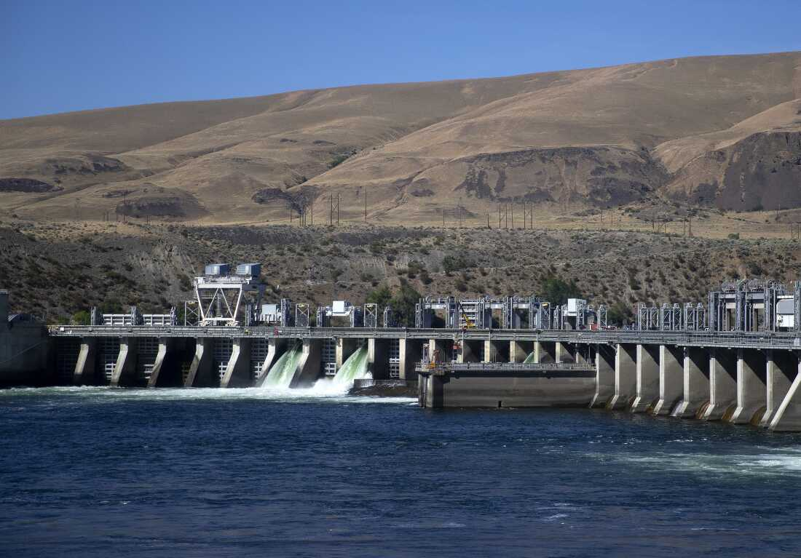

The Problem: A Paper Giant with Empty Hands
Nepal's rivers are geological fortune. The Himalayan watershed collects snowmelt and monsoon rain from the world's highest peaks and discharges it through some of the steepest gradients on the planet — a hydraulic engineer's dream. The country's theoretical hydropower potential of 83,000 MW, and its technically and economically feasible potential of approximately 42,000 MW, would, if fully developed, generate more electricity per citizen than Germany does today. On paper, Nepal should be a prosperous, energy-rich nation. In practice, it is neither.
As of FY 2023–24, Nepal's total installed electricity capacity stands at approximately 3,300 MW — barely 4% of its feasible potential. Per capita electricity consumption hovers around 350 kWh per annum, compared with India's 1,255 kWh, Sri Lanka's 600 kWh, and Bhutan's extraordinary 12,000 kWh. The paradox is glaring: the country with the water is the country without the power.
| Country | Per Capita kWh/yr | Hydro Potential Utilized | Avg. Industrial Tariff |
|---|---|---|---|
| 🇳🇵 Nepal | ~350 kWh | ~4% | NPR 10–12/unit |
| 🇧🇹 Bhutan | ~12,000 kWh | ~35% | Export-indexed |
| 🇮🇳 India | ~1,255 kWh | — | INR 5–7/unit |
| 🇪🇹 Ethiopia | ~100 kWh | ~12% | Very low (GERD-era) |
| 🇳🇴 Norway | ~24,000 kWh | ~95% | Variable spot market |
These numbers alone indict the policy architecture. Energy economists like Ratna Sansar Shrestha have long argued that Nepal's fixation on export as the primary goal of hydropower development is not an economic strategy — it is a political one, shaped less by domestic welfare calculus and more by the gravitational pull of India's grid management needs.

India's Strategic Gambit — It Was Never About Kilowatts
The Grid Arithmetic That Doesn't Add Up
India's installed electricity capacity crossed 500 GW in early 2024, making it the world's third-largest electricity market. Nepal's entire current generation capacity of ~3,300 MW represents less than 0.7% of that total. Why, then, does India negotiate so persistently — and so advantageously — for Nepal's electricity?
The standard answer, repeated in press releases and ministerial statements on both sides, is "regional cooperation and clean energy transition." The real answer is more hydrological than electrical.
The True Prize: Regulated Water Flow
The Indian subcontinent's northern plains — Uttar Pradesh, Bihar, and West Bengal — are irrigated by rivers originating in Nepal. The Koshi, the Gandaki (Narayani), the Karnali, and their tributaries collectively irrigate an estimated 15 to 20 million hectares of Indian farmland, making them the agricultural lifeblood of the most populous region on earth.
This arrangement is not new. The Koshi Barrage and the Gandak Barrage — built under bilateral treaties in the 1950s and 1960s — already provide India with flood control and irrigation water from Nepal's rivers under terms that have long been criticised by Nepali water economists as deeply asymmetric. These existing structures are the template. The question now is what happens when Nepal finally builds its planned storage dams.
Dipak Gyawali, former water resources minister and hydraulic engineer, has articulated this dynamic with precision: the real value of a storage project on the Karnali or the Gandaki is not the electricity it generates, but the "firm water" it provides downstream in January and February when Indian wheat and mustard fields need it most. Nepal's current fleet is almost entirely run-of-river — it stores nothing and regulates nothing. But the moment Budhigandaki, Pancheshwar, or Saptakoshi are built as currently designed, that changes permanently. The regulated dry-season flow — worth billions in incremental agricultural output to India — will cross the border at zero cost to the Indian state. The design choices being made on paper today will lock in that reality for fifty years.
- Nepal's current fleet is almost entirely run-of-river — no meaningful storage, no dry-season regulation. The irrigation subsidy problem is latent, not yet fully activated.
- Koshi and Gandak Barrages already provide India regulated water under 1950s–60s treaties widely criticised as asymmetric — this is the existing template.
- If built as currently designed, Budhigandaki (1,200 MW) would regulate ~2.5 million hectares of downstream Indian irrigation — estimated value to India: USD 200–400 million/year (World Bank, 2017).
- Nepal's planned share of that downstream benefit: USD 0. Nepal would bear 100% of the capital cost, submerged land, and displaced communities.
- Nepal still has a window to fix this — but only before construction begins. Once Budhigandaki breaks ground under the current pure-hydro design, the window closes for fifty years.
This is not a conspiracy theory. It is basic river hydrology combined with a treaty architecture designed in a different era. The 1950 Treaty of Peace and Friendship and the subsequent Mahakali Treaty of 1996 both contain provisions that effectively subordinate Nepal's water sovereignty to downstream interests. What is missing from Nepal's energy policy discourse is a frank accounting of these non-electrical benefits — and a demand that they be priced and compensated accordingly.

The Budhigandaki Blunder: A Case Study in Policy Malpractice
No single project crystallizes Nepal's hydropower tragedy better than the Budhigandaki Hydroelectric Project. Planned for 1,200 MW of installed capacity in Gorkha and Dhading districts, the project has been under development — or rather, under endless deliberation — for over three decades. Its story is a textbook in how not to develop a major water infrastructure asset.
Pure Hydro vs. Multipurpose: The Design Choice That Changes Everything
Budhigandaki is currently designed as a pure storage hydropower project. Its primary deliverable, in the eyes of the Nepal Electricity Authority, is electricity for domestic consumption and export. This framing is the original sin.
A genuinely multipurpose design would allocate the project's costs — and crucially, its revenues — across four distinct services: electricity generation, dry-season water supply to downstream Indian agriculture, flood attenuation benefits, and navigation and fisheries benefits. Each has an economic value. Each has an identifiable beneficiary. Yet Nepal's project documents assign all costs to electricity ratepayers and the Nepali treasury, making no provision to recover a single rupee from downstream beneficiaries.
- Original cost estimate (2008): NPR 35 billion (~USD 330 million)
- Final cost at commissioning (2021): NPR 90+ billion (~USD 850 million)
- Cost overrun: 157% above original estimate
- Primary causes: geological surprises, COVID-19 delays, FX losses on Chinese contractor payments
- Debt servicing: ~25–30 years at prevailing tariffs from Nepali retirement savings (EPF, CIT)
- Lesson: Nepal's construction cost averages USD 2,500–4,000/kW — 2–4× higher than Ethiopia or Laos
The Export vs. Prosperity Paradox: The 86-Cent Problem
The central question of Nepal's energy policy is not "how much electricity can we produce?" It is: "what is the highest-value use of each unit of electricity we produce?" The answer, by almost any economic analysis, is domestic industrial consumption — not export.
Consider a unit of electricity sold to the Indian grid through the IEX Day-Ahead Market at the average clearing price of INR 3.5–5 per unit (approximately 4–6 US cents). Nepal earns 4–6 cents per kWh. Now consider what that same unit could produce if consumed by a silicon carbide smelter, a data center, or an electric arc furnace inside Nepal. The value-added product would generate 80–120 US cents per kWh equivalent of economic output — a premium Nepal forfeits every time it exports rather than industrializes.
| Use Case | Value per kWh | Local Employment | Revenue Stability |
|---|---|---|---|
| IEX Export (Day-Ahead Market) | USD 0.04–0.06 | None | Highly volatile |
| Bitcoin / Crypto Mining | USD 0.08–0.15* | Very low | Very volatile |
| AI / Cloud Data Centers | USD 0.40–0.80 | High | Contract-stable |
| Ferroalloy / Smelting Industry | USD 0.60–1.20 | Moderate–High | Commodity cycle |
| Domestic Manufacturing (general) | USD 0.30–0.60 | High | Stable |
* Estimate at prevailing BTC prices; highly variable by market cycle.
The Bhutan Model: Proof of Concept

With a population of just 750,000 and an installed capacity approaching 2,400 MW, Bhutan does export electricity to India — but through the Druk Green Power Corporation on terms that include royalty payments, revenue-sharing, and guaranteed price floors. More importantly, Bhutan's domestic per capita consumption of ~12,000 kWh is the result of deliberate policy: cheap electricity for citizens and businesses, fostering a real industrial base, with hydropower revenues funding free healthcare and education.
Nepal's 350 kWh per capita is not a resource constraint. It is a policy failure. Nepal generates enough electricity to give every citizen 1,000+ kWh per year right now — but load-shedding persists in winter because the transmission infrastructure is broken, and because run-of-river projects cannot provide firm power without storage reservoirs.

Pricing & The Norway Cautionary Tale
The IEX Mirage
Nepal has been granted access to the Indian Energy Exchange (IEX) Day-Ahead Market (DAM), celebrated in Nepali policy circles as a breakthrough — a way to receive "market prices" rather than below-market bilateral rates. The celebration is premature.
The IEX DAM is a spot market: prices fluctuate hour by hour and season by season. In summer 2022, DAM prices spiked to INR 10–12/unit as India faced a coal shortage and heatwave. Nepal earned windfall revenues. But in November 2023, DAM prices fell to INR 2.5–3/unit as Indian coal supply normalized. Here is the structural trap: Nepal's run-of-river projects peak in the monsoon, when Indian prices are lowest (India's own hydro is also peaking). In the dry season, when IEX prices are highest, Nepal has the least to sell.
The Norway Warning
Norway, with a hydropower-dominant grid, entered long-term export agreements with Germany and the UK through the North Sea Link and NordLink interconnectors. When Russia's invasion of Ukraine disrupted European gas supplies in 2022, electricity flowed south, chasing export revenues. The result: Norwegian domestic electricity prices quadrupled almost overnight. Norwegian aluminum smelters — the backbone of the country's industrial base — faced existential cost pressures. Households in western Norway saw bills rise by 300–500%.
- Norway signed long-term export contracts → prices spiked → domestic consumers paid the premium.
- Nepal's IEX DAM access has no price floor mechanism protecting domestic consumers.
- If Nepal scales cross-border transmission to 5,000+ MW, domestic tariff isolation becomes impossible.
- During Indian grid stress events, Nepal could face pressure to prioritize export over domestic supply.
- Nepal has no strategic electricity reserve policy, no demand-response framework, no consumer price protection clause in IEX agreements.
The Data Center Alternative: Silicon Over Steel

The Colocation Opportunity
If exporting electrons is a poor strategy, what is the alternative? One compelling answer is to attract industries that consume electricity at the point of generation — eliminating transmission losses, infrastructure costs, and the geopolitical risk of grid dependency. The global data center industry, consuming approximately 200–250 TWh/year and projected to double by 2030, is exactly such an industry.
Nepal's hydropower hubs — the Marsyangdi corridor, the Kali Gandaki valley, the Trishuli basin — could theoretically host collocated data centers receiving power directly from a project's switchyard, bypassing the national transmission grid. This eliminates transmission losses (currently 13–15% on Nepal's grid) and provides a green energy provenance stack of genuine quality.
The Altitude & Cold Temperature Advantage
Beyond cheap electricity, Nepal's hydropower valleys offer something the global data center industry is actively chasing: naturally cold ambient temperatures year-round. Cooling accounts for 30–40% of total data center energy consumption (ScienceDirect, 2024) — the largest single operational cost. The industry measures this through Power Usage Effectiveness (PUE): the global average is 1.55, meaning 55 cents of every electricity dollar goes to cooling, not computation. Nordic cold-climate facilities in Iceland, Finland, and Norway achieve PUEs of 1.08–1.15 by using ambient air and cold water for "free cooling" — no mechanical chillers. A 30°C temperature advantage over a hot-climate location can save a 1 GW campus upwards of USD 150 million per year in cooling costs alone.
Nepal's hydropower valleys sit at 800–1,500m elevation with glacial rivers providing a constant cold-water supply ideal for water-side free cooling — where river water circulates through heat exchangers and returns to the source, consuming no water and requiring no evaporation. Research shows this delivers up to 21% additional energy savings in water-rich, low-temperature environments (Li & Li, 2024). One design caveat: altitude reduces air density by up to 17% at 1,600m, making air-cooled servers less efficient — meaning any Nepal-based facility should use liquid cooling by design, not air cooling. It is the same logic that drew Facebook to Luleå in Arctic Sweden and Google to a seawater-cooled mill in Finland. Nepal offers the same stack: cold water, clean electricity, direct colocation.
The Critical Constraint: Fiber
Data centers are not useful without ultra-low-latency, high-bandwidth fiber optic connectivity. A data center at the Kaligandaki dam site, 150 km from Kathmandu, needs fiber with sub-10ms latency to a major Asian hub. Nepal currently has terrestrial fiber to India through four border crossing points, but these links are single-thread and capacity-constrained. Submarine cable access through Bangladesh or Myanmar has been explored, but neither has materialized at meaningful capacity.
Bhutan's Bitcoin Mining: Instructive but Insufficient
Bhutan's sovereign wealth fund has operated Bitcoin mining facilities powered by hydroelectricity since at least 2019. At disclosure in 2023, Bhutan was mining Bitcoin with approximately 100 MW of dedicated capacity — one of the largest sovereign miners per capita. The model proves that electricity-intensive computing can be collocated with generation infrastructure. But Bitcoin mining consumes electricity without creating forward linkages — no skilled employment, no technology transfer, no manufactured exports. Nepal should insist on data center applications that generate genuine economic value: AI model inference, cloud services, financial computing — businesses creating foreign exchange, skilled employment, and supply chain linkages.
The Honest Reckoning: Do the Pros Win?
They do — but with one hard condition. Fiber and latency is the only genuinely fatal constraint. Nepal's data connectivity routes entirely through India, recreating the same geopolitical dependency that defines its electricity export problem. Until a submarine cable through Bangladesh or an independent corridor materialises, Nepal cannot credibly host latency-sensitive workloads. Everything else — seismic risk, workforce gaps, political instability, flood exposure at dam sites — is solvable through engineering standards and phased investment. On the water question: closed-loop river cooling returns water to the source and is environmentally manageable with proper thermal discharge limits; evaporative cooling towers, which genuinely consume water at scale, must be ruled out for any Himalayan site. The verdict: the pros win, but only if fiber is treated as prerequisite infrastructure, not an afterthought. A data center built before that problem is solved is just another stranded asset — the same mistake Nepal keeps making with generation capacity it cannot fully use.
SECTION VIIThe Competitive Landscape: Why Nepal Is Already Losing
Even if Nepal were to pivot decisively toward electricity-intensive industrialization today, it faces a structural cost competitiveness problem: its hydropower is among the most expensive to build in the world.
| Country / Project | Construction Cost | Geographic Factor | Industrial Tariff |
|---|---|---|---|
| 🇳🇵 Nepal (avg.) | USD 2,500–4,000/kW | High altitude, remote, seismic | NPR 10–12/unit |
| 🇪🇹 Ethiopia (GERD) | USD 800–1,200/kW | Lower altitude, accessible | Very low (subsidized) |
| 🇱🇦 Laos (Mekong) | USD 1,200–1,800/kW | Accessible, Chinese investment | USD 0.03–0.05/unit |
| 🇨🇳 China (Yangtze) | USD 1,000–1,500/kW | State enterprise, no financing cost | Very low |
| 🇧🇷 Brazil (Amazon) | USD 1,500–2,500/kW | Remote but flat terrain | Low |
Ethiopia's Grand Ethiopian Renaissance Dam (GERD), with 6,450 MW of capacity built at roughly USD 745 per kW, has positioned East Africa as a potential low-cost industrial electricity hub. Laos has built its economy around selling hydroelectricity to Thailand and Vietnam while maintaining tariffs low enough to attract Chinese investment in special economic zones.
Nepal's high construction costs — driven by difficult terrain, limited road access, chronic project delays, and foreign exchange-denominated debt service — make it structurally uncompetitive on raw electricity cost. The implication is not to abandon industrial ambition, but to target industries whose profitability is less sensitive to the marginal cost of electricity and more sensitive to governance, rule of law, and human capital: pharmaceuticals, precision electronics, data processing.
SECTION VIIIThe Last Mile Crisis: Transmission for Export, Distribution for Neglect
Nepal now generates more electricity than at any point in its history — yet rolling outages, voltage fluctuations, and transformer failures remain a daily reality for most households outside the Kathmandu valley. The problem is not a generation shortage. It is a structural neglect of the distribution infrastructure that would actually deliver that electricity to citizens. And at the root of that neglect is a transmission development pattern built around the Indian border, not the Nepali factory or kitchen.
The MCC Design: Built for Export, Not for Nepal
The centerpiece of Nepal's high-voltage expansion is the MCC (Millennium Challenge Corporation) compact — USD 630 million (including Nepal's own USD 197 million contribution) for approximately 315 km of 400kV line along the Lapsiphedi–Galchhi–Damauli–Sunwal corridor. This line is engineered for bulk power transfer toward the Indian border at Gorakhpur. What it conspicuously lacks are the step-down substations and distribution integration points that would feed Nepal's own industrial corridors and municipalities along the route. The MCC line is an export highway. Nepal is paying for it as a domestic development project.
- NEA-built 400kV lines: ~USD 0.4–0.6 million per kilometer.
- MCC project: ~USD 2 million per kilometer — a 3× to 4× cost premium.
- The personnel paradox: The actual technical execution relies heavily on NEA engineers and local Nepali consultants. Nepal is paying a foreign-aid premium for infrastructure built by its own human capital, under the label of "international standards."
The Distribution Gap: Connected Is Not the Same as Powered
While the government focuses on 400kV export highways, the 11kV and 33kV distribution lines that enter homes, hospitals, and factories are in a state of chronic neglect. Frequent tripping, voltage fluctuations, overloaded transformers, and single-circuit lines that snap in monsoon landslides are the lived reality for businesses and households across all seven provinces. Nepal's electrification statistics look impressive on paper. The experience of a factory in Butwal or a health post in Humla tells a different story. Surplus energy at the dam is worthless if the wire to the transformer cannot carry the load.
The Transitions That Cannot Happen Without a Reliable Grid
This distribution failure is actively blocking three of Nepal's highest-impact economic transitions. Electric cooking — a direct substitute for imported LPG — requires stable 15–20A supply at the household level; most current 11kV transformers cannot handle the simultaneous load of induction stoves in a single neighbourhood. EV charging requires stable 3-phase supply at 50–150kW per fast charger — largely unavailable outside the valley. And Nepal's extraordinary achievement of being ranked second in the world after Norway in EV share of total vehicle imports risks stalling entirely in a "grid-lock" scenario where demand for EVs grows but the local grid cannot deliver the power to charge them.
Nepal has built the source. It has neglected the delivery system. Until that changes, the megawatts at the dam will keep flowing to the Indian grid, and the Nepali household will keep cooking on imported LPG.
SECTION IXPolicy Recommendations
Multipurpose Redesign: Immediately restructure Budhigandaki and all future storage projects as multipurpose assets. Engage World Bank arbitration or UNCSD frameworks to price and recover downstream water regulation benefits from India.
Industrial Priority Electricity Policy: Establish a guaranteed tariff of NPR 4–6/unit for anchor industrial tenants committing to 10+ year off-take agreements in designated Special Economic Zones adjacent to generation infrastructure.
Fiber Infrastructure as National Priority: Treat fiber optic network build-out as equivalent-priority infrastructure to transmission lines. Explore submarine cable through the Bangladesh Bay of Bengal route.
Dam-Side Data Center Pilot: Designate one hydropower hub (Marsyangdi corridor or Upper Tamakoshi) as a Special Data Infrastructure Zone. Partner with a Tier-2 Asian cloud provider for a 50–100 MW collocated facility.
IEX Price Floor Mechanism: Negotiate a bilateral minimum price guarantee (floor of INR 5/unit) for all IEX Day-Ahead Market exports — as a condition of any expansion of cross-border transmission capacity beyond current levels.
Domestic Consumption Target: Set a binding national target of 1,000 kWh per capita by 2030 — not as a ceiling, but as a floor. Make domestic energy access the primary KPI of the Energy Ministry, not megawatts installed.
Treaty Renegotiation Mandate: Commission a comprehensive legal and economic review of the 1950 Treaty and Mahakali Treaty provisions as they apply to water resource sharing. Negotiate explicit compensation for dry-season water regulation provided to India.
Distribution Grid Emergency Programme: Declare a national distribution infrastructure emergency. Ring-fence a minimum of 30% of annual energy sector capital expenditure for 11kV and 33kV distribution line upgrades, transformer capacity expansion, and local substation development — prioritising municipalities with demonstrated EV adoption and electric cooking demand.
MCC Domestic Integration Audit: Commission an independent technical audit of the MCC transmission corridor to assess the adequacy of step-down substation provision for domestic industrial and household supply along the route. Where deficiencies are found, require remediation as a condition of project completion acceptance.
Conclusion: The River Does Not Wait
Nepal's rivers have been flowing north-to-south, carrying snowmelt and sediment into the Indian plains, for millennia. They will continue to do so long after the current generation of hydropower engineers and policymakers has retired. The question is not whether Nepal's water will benefit India — it is a geographic inevitability. The question is whether that benefit will be acknowledged, priced, and used as a foundation for genuine bilateral equity, or whether it will continue to be extracted as a silent subsidy from one of the world's poorest nations to one of its fastest-growing economies.
Nepal's window of hydropower development is not infinite. Climate models project significant changes in Himalayan glacial melt patterns by 2050–2070, with long-term implications for river hydrology. The country has perhaps one generation — thirty years — to translate its hydraulic geography into lasting industrial and social capital. That translation requires not better engineering, but better economics: a clear-eyed understanding of who benefits from Nepal's water, who pays for Nepal's dams, and who ultimately holds the power to change the equation.
Prosperity is built by keeping megawatts at home long enough to transform them into skills, products, industries, and wages. Until Nepal's policymakers internalize that distinction, the rivers will keep flowing south — and the prosperity will keep flowing with them.
Sources & References
- Nepal Electricity Authority (NEA) Annual Reports, FY 2021–22 and FY 2022–23. Kathmandu: NEA.
- World Bank (2017). South Asia's Turn: Policies to Boost Competitiveness. Washington DC: World Bank Group.
- World Bank (2021). Unlocking South Asia's Potential Through Regional Energy Trade. Washington DC: World Bank Group.
- Indian Energy Exchange (IEX) Market Snapshot Reports, Q1–Q4 2023 and Q1 2024. New Delhi: IEX.
- Shrestha, Ratna Sansar (2019). Exporting Electricity: Is It Worth It? Kathmandu: Forum for Water Resources Nepal.
- Gyawali, Dipak (2020). Ku-bikash: Ill-development and Its Discontents. Kathmandu: Himal Books.
- International Energy Agency (IEA) (2023). Electricity Market Report. Paris: IEA.
- ADB (2022). Nepal Energy Sector Assessment, Strategy, and Road Map. Manila: ADB.
- NorCEM / Thema Consulting (2023). Norwegian Electricity Price Crisis: Causes and Policy Lessons. Oslo.
- Druk Green Power Corporation Annual Report 2022–23. Thimphu: DGPC.
- ICIMOD (2023). Hindu Kush Himalaya Assessment: Water, Ice, Society and Ecosystems. Kathmandu: ICIMOD.